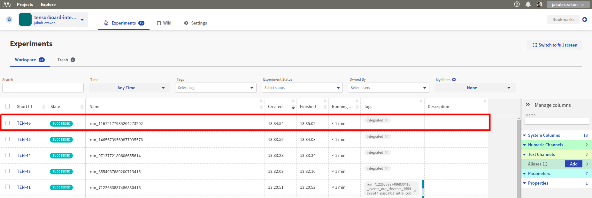
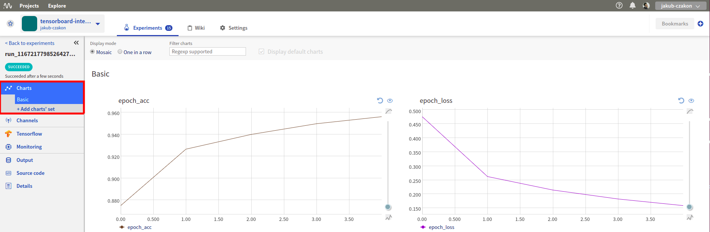
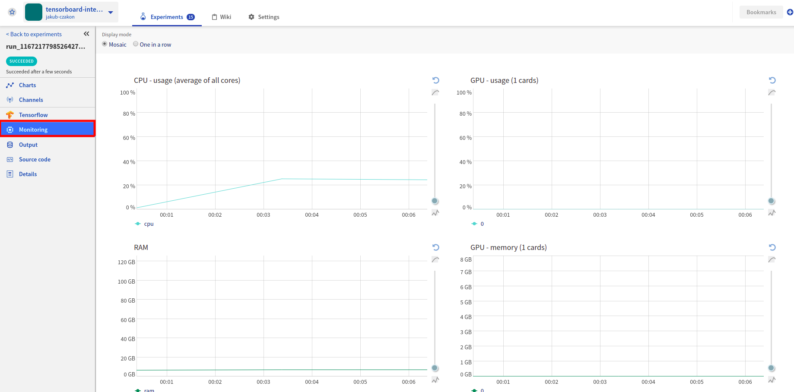
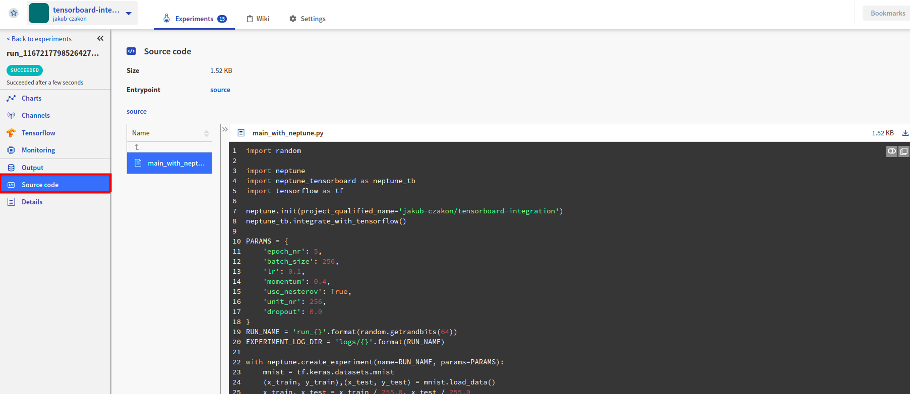

Integrate with TensorBoard logging
Prerequisites
Let’s create a simple training script with TensorBoard logging. In this example we use TensorFlow 1,
however, neptune-tensorboard works well with both TensorFlow 1 and TensorFlow 2.
import random
import tensorflow as tf
PARAMS = {
'epoch_nr': 5,
'batch_size': 256,
'lr': 0.1,
'momentum': 0.4,
'use_nesterov': True,
'unit_nr': 256,
'dropout': 0.0
}
RUN_NAME = 'run_{}'.format(random.getrandbits(64))
EXPERIMENT_LOG_DIR = 'logs/{}'.format(RUN_NAME)
mnist = tf.keras.datasets.mnist
(x_train, y_train),(x_test, y_test) = mnist.load_data()
x_train, x_test = x_train / 255.0, x_test / 255.0
model = tf.keras.models.Sequential([
tf.keras.layers.Flatten(),
tf.keras.layers.Dense(PARAMS['unit_nr'], activation=tf.nn.relu),
tf.keras.layers.Dropout(PARAMS['dropout']),
tf.keras.layers.Dense(10, activation=tf.nn.softmax)
])
optimizer = tf.keras.optimizers.SGD(lr=PARAMS['lr'],
momentum=PARAMS['momentum'],
nesterov=PARAMS['use_nesterov'],)
model.compile(optimizer=optimizer,
loss='sparse_categorical_crossentropy',
metrics=['accuracy'])
tensorboard = tf.keras.callbacks.TensorBoard(log_dir=EXPERIMENT_LOG_DIR)
model.fit(x_train, y_train,
epochs=PARAMS['epoch_nr'],
batch_size=PARAMS['batch_size'],
callbacks=[tensorboard])
Initialize Neptune
import neptune
neptune.init(project_qualified_name='jakub-czakon/tensorboard-integration')
Integrate with TensorBoard
Here you import our method that automatically log TensorBoard metrics.
import neptune_tensorboard as neptune_tb
neptune_tb.integrate_with_tensorflow()
Start experiment
Tell neptune to create an experiment. Let’s give it a name and log hyperparameters. I like to have everything in the with statement if possible, to enforce auto-clean once experiment is completed.
with neptune.create_experiment(name=RUN_NAME, params=PARAMS):
Explore your experiment in Neptune
By adding a few lines of code, your experiment is now logged to Neptune. You can go see it in your dashboard and share it with anyone just as share it with you here
Overview
{kind=link}
Monitor learning curves
{kind=link}
Monitor hardware utilization
{kind=link}
Check the source code
{kind=link}
Full script
Simply copy and paste it to tensorflow_example.py and run.
import random
import neptune
import neptune_tensorboard as neptune_tb
import tensorflow as tf
neptune.init(project_qualified_name='USER_NAME/PROJECT_NAME')
neptune_tb.integrate_with_tensorflow()
PARAMS = {
'epoch_nr': 5,
'batch_size': 256,
'lr': 0.1,
'momentum': 0.4,
'use_nesterov': True,
'unit_nr': 256,
'dropout': 0.0
}
RUN_NAME = 'run_{}'.format(random.getrandbits(64))
EXPERIMENT_LOG_DIR = 'logs/{}'.format(RUN_NAME)
with neptune.create_experiment(name=RUN_NAME, params=PARAMS):
mnist = tf.keras.datasets.mnist
(x_train, y_train),(x_test, y_test) = mnist.load_data()
x_train, x_test = x_train / 255.0, x_test / 255.0
model = tf.keras.models.Sequential([
tf.keras.layers.Flatten(),
tf.keras.layers.Dense(PARAMS['unit_nr'], activation=tf.nn.relu),
tf.keras.layers.Dropout(PARAMS['dropout']),
tf.keras.layers.Dense(10, activation=tf.nn.softmax)
])
optimizer = tf.keras.optimizers.SGD(lr=PARAMS['lr'],
momentum=PARAMS['momentum'],
nesterov=PARAMS['use_nesterov'],)
model.compile(optimizer=optimizer,
loss='sparse_categorical_crossentropy',
metrics=['accuracy'])
tensorboard = tf.keras.callbacks.TensorBoard(log_dir=EXPERIMENT_LOG_DIR)
model.fit(x_train, y_train,
epochs=PARAMS['epoch_nr'],
batch_size=PARAMS['batch_size'],
callbacks=[tensorboard])